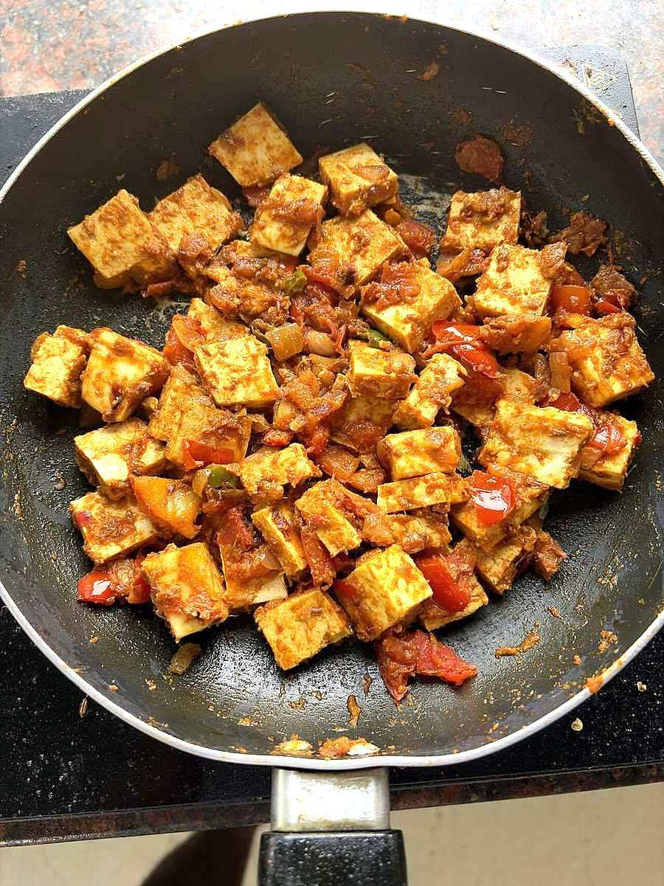

Paneer Bhurji
crumbled paneer scrambled with onion, tomato and capsicum in under twenty minutes

Prep10 min
Cook15 min
Total25 min
Serves3
Difficultyeasy
Contains: dairy
Ingredients
Quantities for 3.
- 300g, crumbled by hand Paneerhand-crumbled, not grated, for uneven texture
- 2 medium, finely chopped Onion
- 2 medium, finely chopped Tomato
- 1 medium, finely chopped Capsicumoptional
- 2cm, grated Ginger
- 4 cloves, minced Garlic
- 2, finely chopped Green Chilli
- 2 tbsp Gheeor butter
- 1 tsp Cumin Seeds
- 1/2 tsp Turmeric
- 1 tsp Chilli Powder
- 1 tsp Coriander Powder
- 1/2 tsp Garam Masala
- 1 tsp, crushed Kasuri Methioptional
- 3 tbsp, chopped Coriander Leavesoptional
- 1/2, juiced Lemonoptional
- to taste Salt
Equipment
kadhai, stovetop
Before you start
- Take the paneer out of the fridge 20 minutes ahead and crumble it by hand into pieces the size of large peas. Cold, hard paneer stays squeaky.
- If using shop-bought paneer that feels firm, soak the block in hot water for 10 minutes and pat dry before crumbling.
- Chop everything before you start — the whole dish is 15 minutes at the stove.
Method
- Heat the ghee in a kadhai and crackle the cumin seeds for 15 seconds.
- Add the onion and fry 6 minutes on medium until soft and lightly golden at the edges.
- Add the ginger, garlic and green chilli and fry 1 minute until fragrant.
- Add the capsicum and fry 2 minutes; it should stay slightly crunchy.
- Add the tomato, turmeric, chilli powder, coriander powder and salt and cook 4-5 minutes until the tomato collapses and the oil shows at the edges.Cook the tomato properly here. Underdone tomato leaves the bhurji tasting sharp and raw.
- Fold in the crumbled paneer and toss gently for 2-3 minutes, just until it is hot and coated.Two to three minutes, no more. Overcooked paneer goes rubbery and starts squeaking against your teeth.
- Crush in the kasuri methi and add the garam masala. Take off the heat.
- Squeeze over the lemon, scatter the coriander leaves and serve straight away with buttered pav or roti.
Storage
Best eaten immediately. Keeps 2 days refrigerated; reheat gently in a pan with 1 tbsp water and a knob of ghee. Do not freeze — the paneer turns grainy.
Recipe v1.0.0, last updated 2026-07-31. Curated for Khaana and kept under version control.